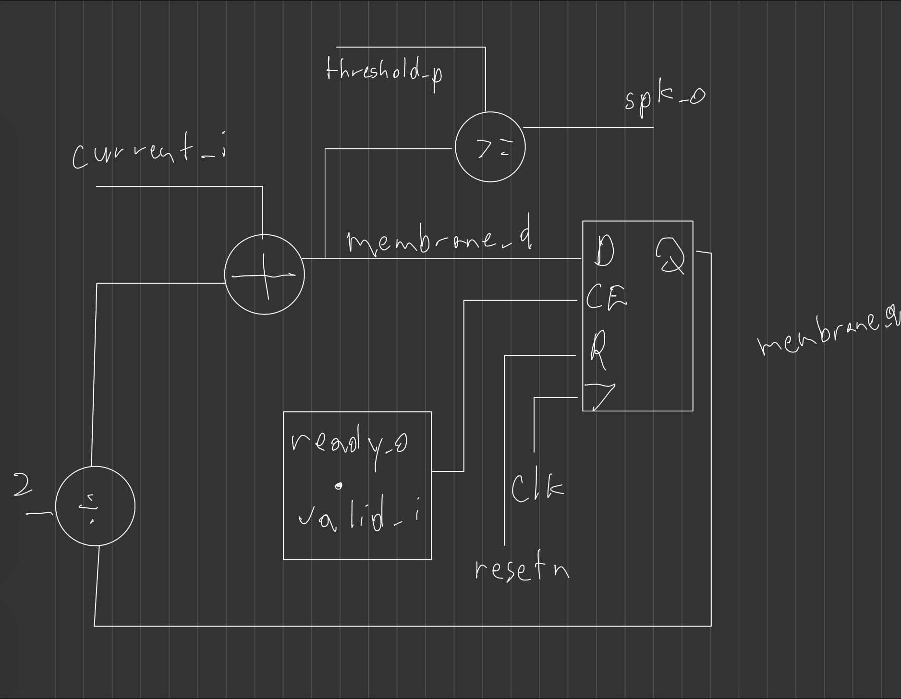
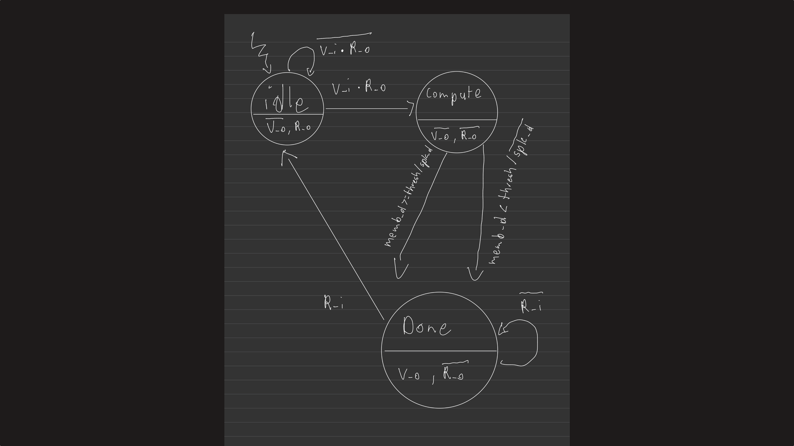
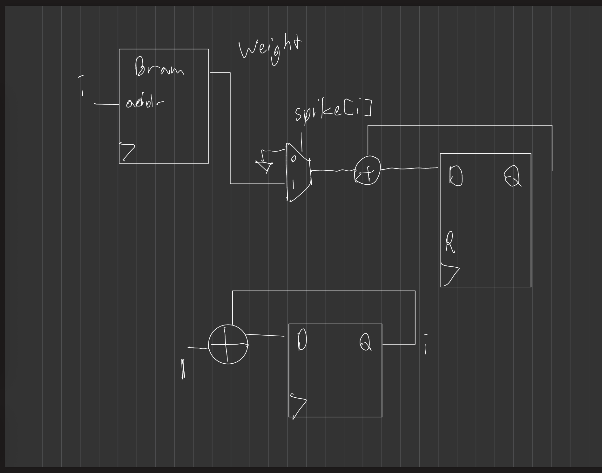
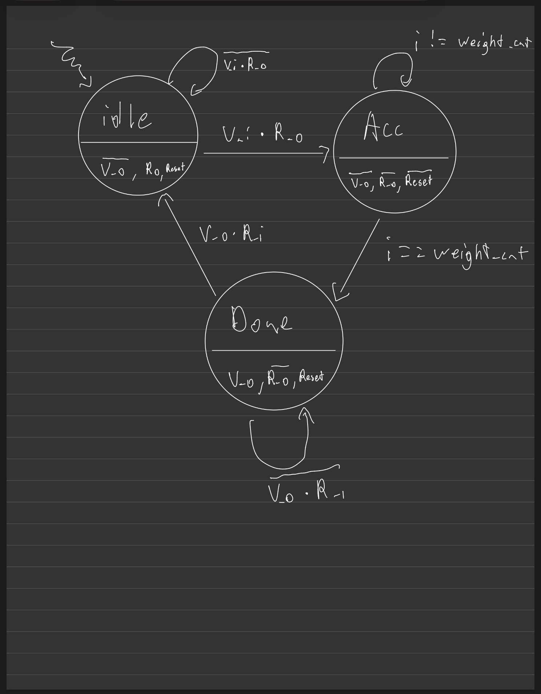
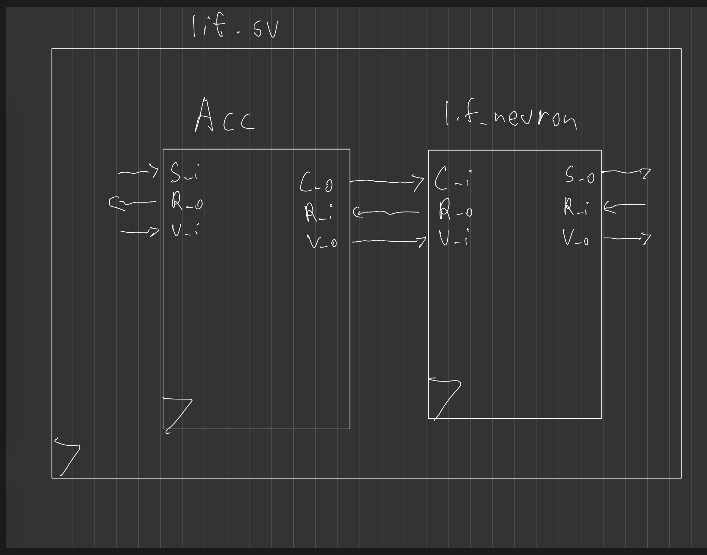
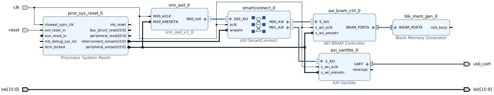
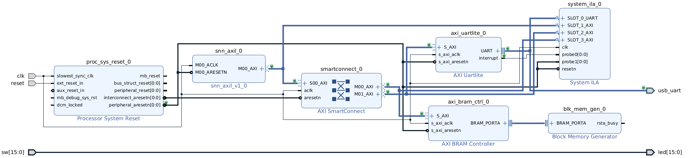

Practice SNN on FPGA
Basys3 - Artix7
Gary Mejia
December 5, 2025
Structure of Presentation
- Prequisites of Project
- FPGA Design
- Data Processing
- Future Work
Prequisites
Software
This project involves several software stacks to run. Software is classified by what it is targetting: data processing, FPGA flow, website/documentation
Data processing and training
The dataset is stored in hdf5 files or .h5
files. An hdf5 reader or library is required extract data from these
files. This project uses the Python h5py and
hdf5plugin modules. For training weights, this project uses
PyTorch. To install them use the following:
conda install h5py
pip install hdf5plugin matlibplot torchHow to process data
Data processing is done through the central makefile commands:
#To download the dataset
make download-dataset
#To process dataset and make packets
make process-dataset
#To train the weights
make weight-train
#To create the hexfiles required for FPGA synthesis
make hexfiles
#To send packets to FPGA
make send-to-fpgaFPGA Flow
This SNN is deployed on a Xilinx Basys3 board with an
Artix7 FPGA. The Xlinix Vivado version used for this project is
2025.2.

To run the FPGA Flow
The FPGA flow is ran through the central makefile commands:
#To create the SNN IP required for the main project
make create_ip
#To create the Vivado project
make project
#To run the FPGA flow and generate a bitstream
make run-pnr
#To flash the bitstream onto the FPGA
make board-flashDocumentation Flow
To create this website, this repo uses pandoc along with
reveal.js to generate the HTML slide show. This project
specifically uses pandoc 3.8.2.1 and thus is installed
manually by doing the following:
wget https://github.com/jgm/pandoc/releases/download/3.8.2.1/pandoc-3.8.2.1-1-amd64.deb
sudo apt install ./pandoc-3.8.2.1-1-amd64.debTo create the website
To create this website, use the central makefile command:
make pageDeployment is handled via Github Actions and the
deploy.yml workflow file.
FPGA Design
Leaky Integrate Fire Neuron

LIF Neuron FSM for Data Transfer

Accumulator Design

Accumulator FSM for Data Transfer

LIF + Accumulator

Spiking Neural Network Architecture
Input layer - 6 Neurons Hidden layer - 32 Neurons Output layer - 3 Neurons
Note: Input layer neurons take in current while hidden and output layer neurons take in spikes
SNN with AXI Lite
AXI Lite is a communication protocal for FPGA systems. Useful for
memory mapped IO on the system. SNN uses it to communicate to the UART
module for data transmission and external BRAM to store incoming data
for processing. UART address is 0x0-0x80 and the external
BRAM is 0x80-0xFF.
Top Level Design

Top Level Utilization and Timing Report
Timing Report
- WNS - 1.746ns
- WHS - 0.026ns
Utilization
- LUT - 4873/20800 (23.43%)
- LUTRAM - 13/9600 (0.14%)
- FF - 5271/41600 (12.67%)
- BRAM - 0.50/50 (1.00%)
- IO - 36/106 (33.96%)
Top Level Design with ILA

Top Level (ILA) Utilization and Timing Report
Timing Report
- WNS - 2.176ns
- WHS - 0.026ns
Utilization
- LUT - 8633/20800 (41.50%)
- LUTRAM - 708/9600 (7.73%)
- FF - 11266/41600 (27.08%)
- BRAM - 11.50/50 (23.00%)
- IO - 36/106 (33.96%)
Data Processing
Overview of scripts
download.py- Download the datasetdata_processing.py- Reads out the data into .npy filesweight_train.py- Uses a simple SNN off chip to train weights and save them as .npyhexfile_generation.py- Generates the hexfiles for the LIF neurons in the SNNuart.py- Sends out the dataset into the FPGA via UART
How data is processed
- Dataset processing is done in
data_processing.pyand stored in `.h5 files - Requires a special library to index them, I use
h5pyandhdf5plugin - Script contains functions to read out data groups and store those
into .npy files
numpyis used in all other scripts to manipulate data afterwards
Weight Training
- Training is done in
weight_train.py- Requires the dataset to be processed via
data_processing.py
- Requires the dataset to be processed via
- Library of choice is
PyTorch- I use a 2 layer feed-forward
SNNLikeNetwith uses 6 input features, 32 hidden features, and 3 output features - Uses MSE for loss function and default Adam optimizer
- I use a 2 layer feed-forward
- Weights are converted into Q16.16 fixed point values for BRAM
storage
- Multiply a float by 2^16 and round to nearest integer
- These are converted into hexfiles for use in the Verilog function
$readmemh
Future Work
Proper Inference working
This project is almost done. All data is processed for FPGA
transmission however the system still has bugs. Additionally, the main
spiking_neural_net.sv testbench can take in data from
external files once they have been processed. With more time, this
project can have inference being done in simulation or hardware.
More Simulations
Only the current_acc.sv module has a through testbench,
all others only check if data passes thru with no X propogation
Since all modules use the Ready-Valid handshake in some format, formal verification can be employed to formally prove proper handshaking
Larger BAUD Rate
Basys3 board can support up to 450MHz. The UARTLite IP used has BAUDRate tied to the incoming AXI clock, which requires a PLL in order to modify. However the low WHS of both top level designs poses possible problems for STA.
More SNN Training
This project currently uses a mostly AI generated script for training. With more time a more polished script may be developed for other policies.
Faster Download Script
The current download script works but takes up to 15 minutes to complete the download since it uses small chunks. Need to find a better library for downloads or rewrite the script.
Thanks for watching
Contributions are welcome at https://github.com/gmejiamtz/snn-practice